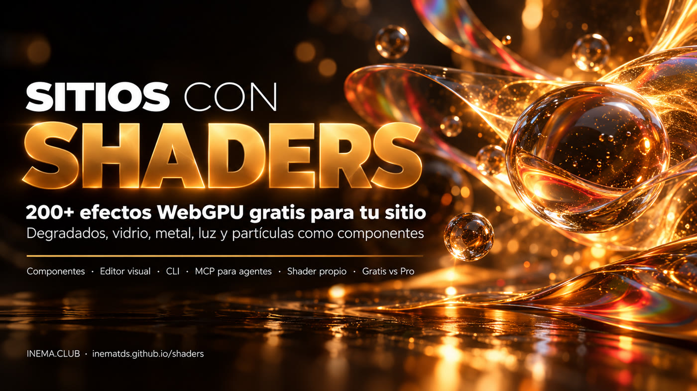

Más de 200 efectos visuales (degradados vivos, vidrio, metal, luz, partículas) que pones en la página como un componente.

Shaders es una biblioteca gratuita y de código abierto (licencia MIT) con más de 200 efectos visuales para páginas web. Sirve para quien hace sitios, landing pages y apps y quiere un fondo animado, un brillo o una distorsión sin escribir código de tarjeta gráfica. Cada efecto es un componente: apilas capas y la tarjeta gráfica del visitante dibuja todo en tiempo real, con la tecnología WebGPU. Para usarla, basta instalar el paquete shaders (React, Vue, Svelte, Solid o JavaScript puro) y abrir la página en un navegador con WebGPU.
Tres combinaciones hechas solo con componentes gratis. Si tu navegador no tiene WebGPU, verás el fondo estático, que es exactamente lo que tu sitio debe mostrar en ese caso.
La demo carga el paquete oficial shaders@4.0.4 desde jsDelivr solo cuando llegas a esta sección y solo si el navegador tiene WebGPU (son cerca de 2,5 MB). La telemetría está desactivada (disableTelemetry: true) y la animación se pausa cuando sale de la pantalla.
Es un paquete npm (shaders, versión 4.0.4 al 18/10/2026) mantenido por Shader Effects Inc. Este repositorio inematds/shaders es un espejo con esta guía; el proyecto original es shader-effects-inc/shaders.
Degradados, ruidos, vidrio, metal, luz, distorsiones, transiciones, desenfoques y efectos de cursor. Un <Shader> dibuja el canvas y cada hijo es una capa.
En el sitio shaders.com armas el efecto en un lienzo infinito, ajustas cada valor y exportas el código listo para tu framework (gratis, con cuenta).
Incluye una skill para el agente de código, un servidor MCP y el llms.txt con todos los componentes y props. Claude Code entiende la biblioteca por sí solo.
| Gratis (MIT) | Pro (de pago, en shaders.com) |
|---|---|
| Motor, los 200+ componentes y las versiones React, Vue, Svelte, Solid y JS | Más de 1.000 presets listos, en colecciones |
| Editor visual y exportar código (requiere cuenta) | 55+ secciones de sitio completas |
| CLI, skill, MCP y búsqueda de presets | Render de video e imagen en HD sin marca de agua |
Escribir tu propio efecto con defineShader | Plugin de Framer, historial de versiones, presets Pro por CLI/MCP |
El orden importa: la primera capa queda al fondo y la última encima. Los efectos que transforman la imagen (desenfoque, grano, viñeta, ondas) actúan sobre lo que vino antes que ellos.
Nada de tarjeta gráfica especial: quien dibuja es el navegador de quien visita el sitio.
Para instalar el paquete en un proyecto React, Vue, Svelte o Solid.
# verificar node -v && npm -v
Chrome y Edge recientes tienen WebGPU. En los demás, el soporte varía según la versión y el sistema: prepara siempre un fondo estático.
// en la consola del navegador !!navigator.gpu
Solo para el editor visual, la CLI conectada y el MCP. El paquete npm funciona sin cuenta.
# sin cuenta, solo el paquete npm install shaders
Comandos y ejemplos tomados del README y de la skill oficial del proyecto.
Un solo paquete sirve para todos los frameworks.
npm install shaders
El tamaño viene del CSS del <Shader>. Los hijos son las capas. En Vue, Svelte y Solid es igual, cambiando el import por shaders/vue, shaders/svelte o shaders/solid.
import { Shader, LinearGradient, CursorTrail } from 'shaders/react' <Shader className="w-full h-64"> <LinearGradient colorA="#0c0c10" colorB="#E2A23B" /> <CursorTrail /> </Shader>
Para guías y páginas de un solo archivo: importa el bundle oficial desde el CDN y pasa las capas como lista. Así funciona la demo de esta página.
<canvas id="fx" style="width:100%;height:360px"></canvas> <script type="module"> import { createShader } from 'https://cdn.jsdelivr.net/npm/shaders@4.0.4/dist/js/bundle.js' await createShader(document.getElementById('fx'), { components: [ { type: 'MeshGradient', props: { stops: [ { color: '#0c0c10', position: 0 }, { color: '#E2A23B', position: 0.7 }, { color: '#f0c070', position: 1 }, ] } }, { type: 'FilmGrain' }, ], }, { disableTelemetry: true }) </script>
Dale al contenedor un fondo CSS parecido al efecto y carga la biblioteca solo si el navegador la soporta. Así nadie ve un área vacía.
.hero-fx { background: radial-gradient(circle at 20% 20%, #E2A23B88, transparent 60%), #0c0c10; }
if (navigator.gpu) {
const { createShader } = await import('https://cdn.jsdelivr.net/npm/shaders@4.0.4/dist/js/bundle.js')
// ...createShader(...) como en el paso 3
}
Por defecto, la biblioteca envía datos de rendimiento a shaders.com/api/telemetry en cerca del 5% de las visitas (respeta el "Do Not Track" del navegador). Para no enviar nada, usa la opción de abajo.
// JavaScript createShader(canvas, preset, { disableTelemetry: true }) // React / Vue / Svelte / Solid <Shader disableTelemetry> ... </Shader>
La skill oficial le enseña a Claude Code (u otro agente) los componentes, la regla de las capas y la CLI. La búsqueda de presets por descripción es gratis y no pide inicio de sesión.
npx skills add shader-effects-inc/shaders # instala la skill en el agente npx shaders search "liquid chrome hero background" --json # busca presets npx shaders preview <nome> # abre el preset funcionando en shaders.com
Vincula tu proyecto a una cuenta de shaders.com: lo que dibujas en el editor se convierte en un archivo de componente en el código y queda sincronizado.
npx shaders connect # vincula el proyecto a tu cuenta npx shaders install # elige efectos del proyecto y guarda los archivos npx shaders update # trae lo que cambiaste en el editor npx shaders@latest install-mcp # MCP para Claude Code, Cursor, Codex...
Un componente nuevo es un objeto con nombre, props y lo que se dibuja en cada píxel (en el lenguaje WGSL). Después lo usas con <CustomShader>.
import { defineShader, wgsl, transformColor, transformPosition } from 'shaders/std' export const Halo = defineShader({ name: 'Halo', props: { color: { default: '#E2A23B', transform: transformColor }, center: { default: { x: 0.5, y: 0.5 }, transform: transformPosition }, radius: { default: 0.6 }, }, paint: wgsl` let d = length((uv - center) * vec2f(aspect, 1.0)) / radius; return vec4f(color.rgb, 1.0 - smoothstep(0.8, 1.0, d)); `, })
La biblioteca brilla en páginas de sitios web. En video y en cursos, conviene ir con calma.
shaders/react.defineShader, reutilizado en todo.Cuatro puntos que verificamos en el código y en la documentación del proyecto.
disableTelemetry (paso 5).